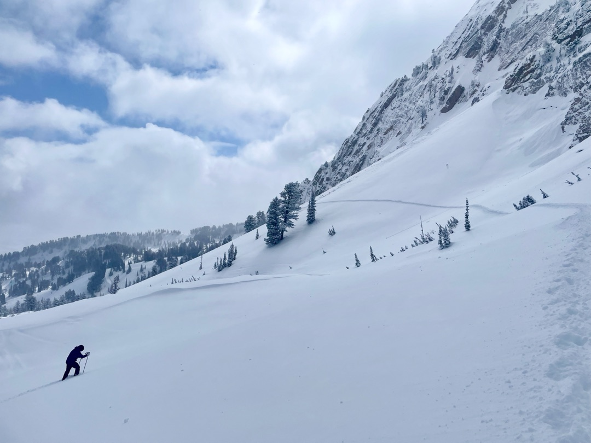
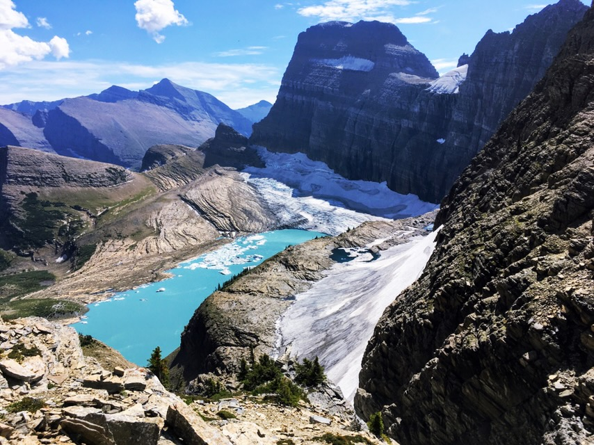
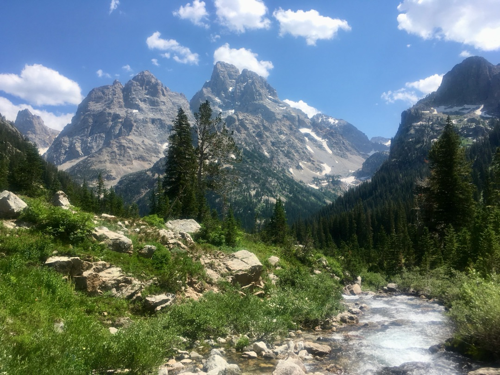
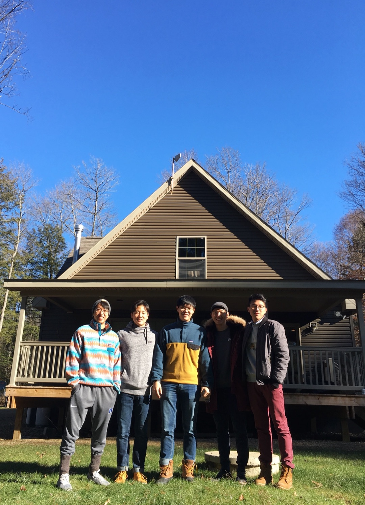
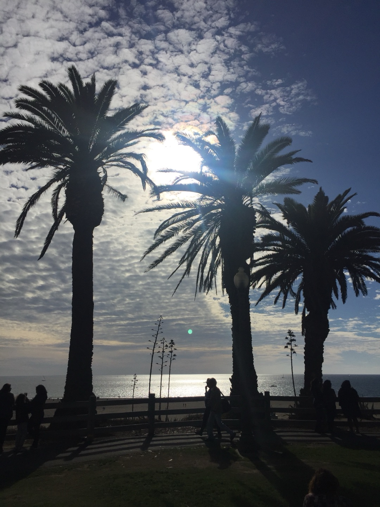
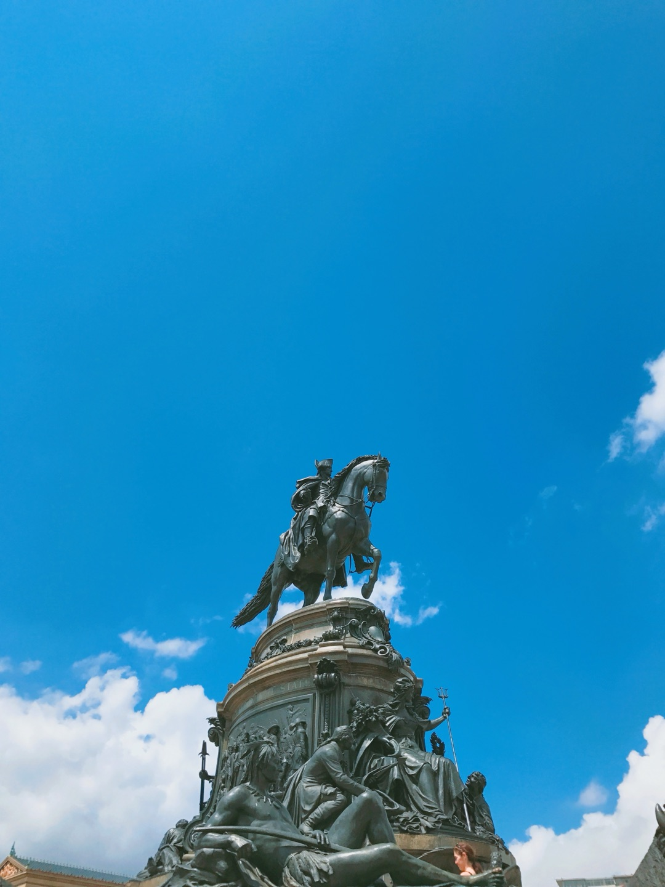
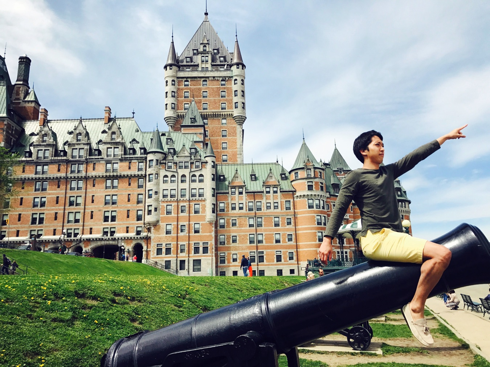
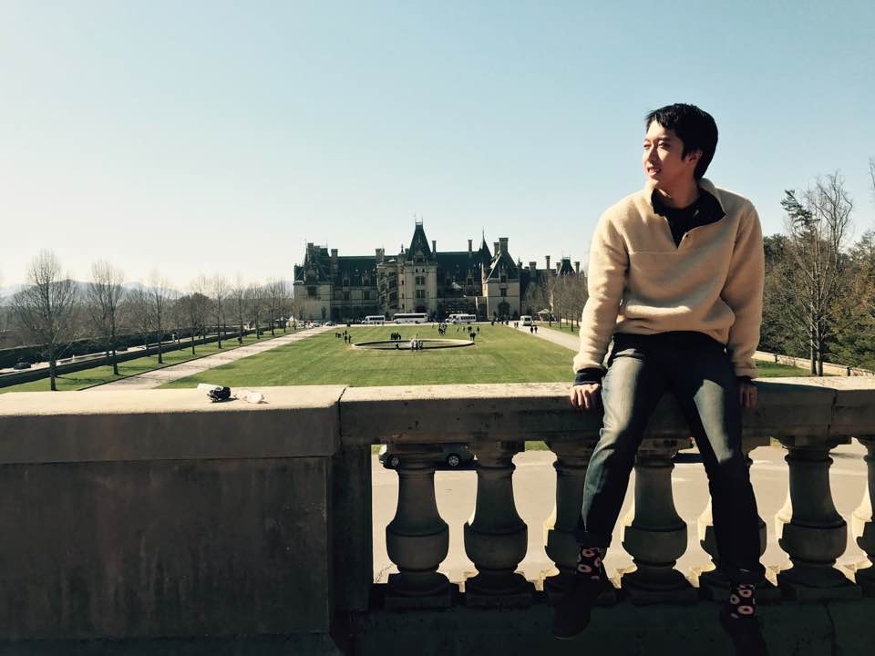
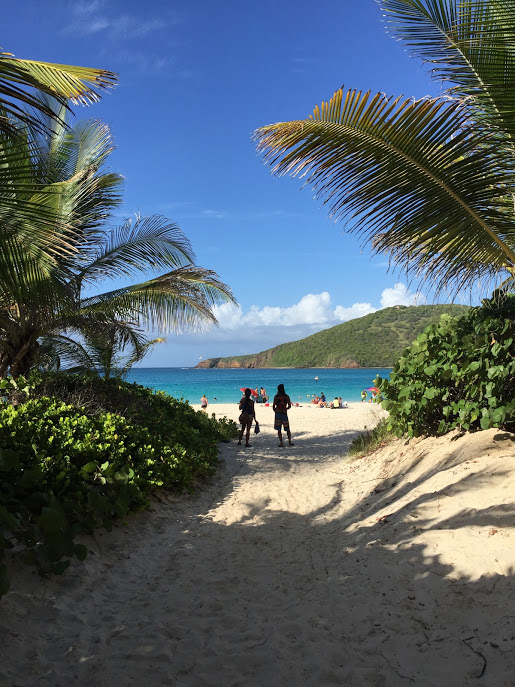

Snowbasin Resort, UT
Winter 20211 / 9

Glacier National Park, MT
Summer 20192 / 9

Grand Teton National Park, WY
Summer 20183 / 9

Cherry Springs, PA
Winter 20174 / 9

Los Angeles, CA
Fall 20175 / 9

Philadelphia, PA
Summer 20176 / 9

Québec, Canada
Summer 20177 / 9

Asheville, NC
Spring 20178 / 9

Puerto Rico
Summer 20169 / 9